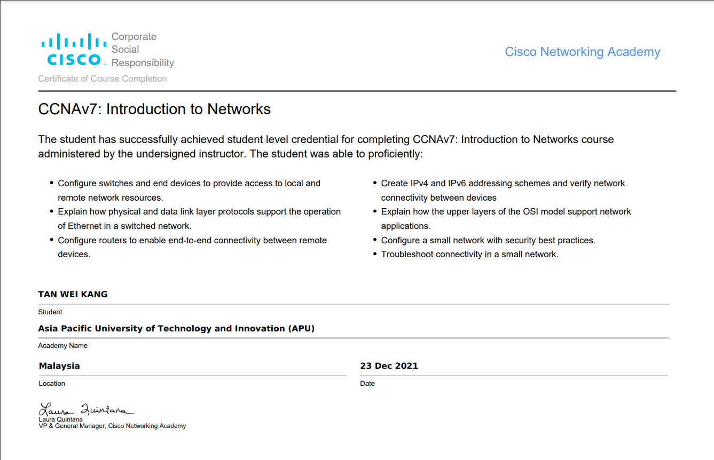

About me
Currently studying Computer Science at Asia Pacfic University of Technology and Innovation (APU) . Wei Kang's aspiration is to initiate/join a team that can bring humankind cleaner oceans by leveraging cutting-edge technologies. Also, he'd love to be contributory to the community in any other areas, as long as it brings benefits to people.
Key skillsets
Data Analysis
Software Development
Artificial Intelligence
About Me
A life-long learner in the everchanging technology industry. After high school graduation, Wei Kang has spent two years advancing and developing his technical knowledge as well as his business acumen. The following are some examples of what values Wei Kang can create for you:
- Full Stack Development - Wei Kang is proficient in a few programming languages such as PHP, Python, Java, and JavaScript. For web development purpose, his skills in Python Django and PHP Laravel frameworks would definitely be helping you. Frontend-wise, Wei Kang is skilled in HTML5, CSS, JavaScript, and Bootstrap. Moreover, Wei Kang has experience in configuring Database Management Systems like MySQL and Microsoft SQL Server.
- Cloud Engineering - Wei Kang has hands-on experience in configuring Linux Ubuntu cloud servers on several popular cloud platforms such as AWS and Alibaba Cloud. He had also deployed web-based applications on the server and maintained them until now (October 2022).
- Data Analysis - Wei Kang can clean noisy data and visualize them clearly in order to help with data analysis. Adequate knowledge on machine learning is possessed as well.
- Algorithm Development - Wei Kang is aware that the essense of programming is to solve problems. Hence, data structure and algorithms will always be a pivoted skillset for companies that need high performance and efficiency.
The world today is driven by technologies. Wei Kang'd love to leverage his little capability to shape the world even just for a little better.
The best way to predict the future is to invent it.

EDUCATION
EDUCATION
2015 - 2019
SPM (Malaysian High School Certification) - 10 A's
2020 - 2022
Diploma in ICT (Data Informatics) - 3.97 CGPA
2022 - 2024
BSC (HONS) IN COMPUTER SCIENCE - Not graded yet
CERTIFICATION
CERTIFICATION
2021
Harvard CS50W's Web Programming With Python and JavaScript. Learn more about the certification here.

Cisco CCNA: ITN Certification. Learn more about the certification here.
EXPERIENCE
EXPERIENCE
2020 May - 2020 December
FOF Technology - Programmer Trainee
2022 May - 2022 July
Rocketsview Management Sdn. Bhd. - Software Development Intern
2020 December - Present
Freelance Software Developer
Recent Projects
Data Analysis Report
College Project
The data analysis report utilizes R programming to perform statistical analyses and create visualizations for the dataset. The report provides insights into the key trends, patterns and relationships in the data, and makes recommendations based on the findings. Over 50 charts have been plotted to make a thorough analysis of the dataset.
Take a look at the work: Data Analysis Report
Business Information System
Freelance Project
This is Wei Kang's first Freelance software development project. The project is about building a web-based system that would allow the various stakeholders of the wellness center business to have an digitally integrated experience in their business operations. The tech stack used in the project consist of Python Django, HTML5, CSS, and JavaScript. Some of the worth-to-mention features include:
- Reward system
- POS System Data Integration
- Session booking system
- Multilingual feature
Restaurant Management System
College Project
This project aims to provide Food and Beverage business operators a fully functional web-based system capable of managing and automating their day-to-day processes. Also, restaurant customers can sign up, place orders, and make payments through the PayPal payment gateway. This project is completed by a 4-member team, and Wei Kang is involved generally in all activities such as planning, design, and documentation, but with a little more focus on project implementation (programming). The technologies used include HTML5, CSS, JavaScript, PHP Laravel, and GitHub for code version control and team collaboration.
Features demonstration video: https://youtu.be/jOz4F5gLhxg
Property Management System
Certification Project
This project aims to help facilitate the business processes of property selling companies. Website admins can create account for salespeople, add properties for sale, verify sales, etc. Meanwhile, the salespeople can book & sell properties, upload any related documents, jot down notes, etc. The entire web application is fully-functional and is ready for deployment. The technologies used include the popular Python Django framework, frontend technologies like HTML5, CSS, and JavaScript, and Git for version control.
Features demonstration video: https://www.youtube.com/watch?v=CNRiBMYIRt0
Business Intelligence Dashboard
College Project
This Online Analytical Processing (OLAP) dashboard aims to visualize and explore the impacts of crime. Detailed analysis is required in order to extract the valuable insights that cannot be observed easily without proper processings. The tools used include Tableau for Data Visualization and KNIME for Data Preprocessing.
Play with the dashboard: https://public.tableau.com/app/profile/tan.wei.kang8401/viz/Sem4_IDA_OLAP/Dashboard1?publish=yes
Machine Learning Model
College Project

A predictive analysis is done to forecast the future Malaysian government expenditure on the Ministry of Home Affairs. The aim of this analysis is to allow businesses, entrepreneurs, and the investors to make informed decision regarding the potential of the public safety industry in Malaysia. With data collected from various sources like the Malaysian government data repository and IMF data repository, a data preprocessing pipeline is built to clean the data, finding and handling the outlying data, and perform operations such as data transformation and data integration. All these are made possible by using an open source data science tool namely KNIME. I truly appreciate the selfless contributors that have developed such a great tool for free.